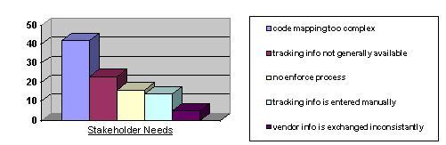

|
План управления требованиями содержит информацию, которая может находиться в большей или меньшей мере в других планах.
См. также Рабочий продукт: План управления требованиями, адаптация.
Как говорится в документе Applying Requirements Management with Use Cases, управление требованиями играет
важную роль в гарантии успеха проекта. В число самых частых причин неудач входят:
-
Недостаток вклада пользователя
-
Неполные требования
-
Изменение требований
Ошибки, связанные с требованиями, - наиболее частый класс ошибок и наиболее затратные в исправлении.
Правильная связь с заинтересованными сторонами может помочь с этими проблемами. Заинтересованные стороны играют
важную роль в определении требований и понимании их приоритетов. Большинство заинтересованных сторон, однако,
плохо разбираются во влиянии предъявляемых требований на стоимость и график и, следовательно, организация, занимающаяся
разработкой, должна самостоятельно работать с ожиданиями заказчиков.
Установка отношений с заинтересованными сторонами включает определение:
-
Ответственности заинтересованных сторон: будет ли заказчик доступен для консультаций? В заранее обговоренное время?
-
Видимость рабочих продуктов заказчику: все ли рабочие продукты должны предоставляться? Предоставлять только
запланированные вехи?
Опишите отслеживаемые элементы и определите способ их именования, выделения и нумерации. См. Понятия: типы требований и Понятия:
трассируемость.
Наиболее важные отслеживаемые элементы перечислены в описании задачи
разработки Плана управления требованиями.
Типичная трассируемость, с ограниченным набором рабочих продуктов описана в документе Разработка Плана управления требованиями.
Кроме того, укажите способ связи требований. Наиболее общие правила:
-
Каждая утвержденная возможность продукта должна соответствовать одному или нескольким дополнительным требованиям,
или одному или нескольким вариантам использования.
-
Каждое дополнительное требование и каждый вариант использования должны соответствовать одному или нескольким
наборам тестов.
Более подробно трассируемость рассматривается в документе Traceability Strategies for Managing Requirements With Use Case.
Далее приведены примеры атрибутов, организованные по типам требований, определенным в задаче разработки Плана управления требованиями.
Требования заказчика
Источник: Заинтересованная сторона, предъявляющая требование (это также можно реализовать как связь с
элементом "Заказчик").
Вес: Определяет степень участия в общей бизнес-перспективе или проблеме, решаемой проектом. Указывается в
процентах (от 0 до 100%). Сумма всех весов не должна превышать 100%. Ниже приведен пример диаграммы Парето, на которой показывается вес нескольких требований заказчика.

Возможности, дополнительные требования и варианты использования
Состояние: прошло ли требование проверку и официальное утверждение. Допустимые значения: Предложено,
Отклонено, Утверждено.
Это может быть договорным состоянием, или состоянием, устанавливаемым рабочей группой, имеющей право делать такие
решения.
Выгода: Важность требования с точки зрения заказчика.
-
Критично (или первично). Выполнение требования является одной из основных задач. Т.е. данная функция
является ключевой. Если такие требования не выполняются, система не выполняет свою основную миссию. Такие
требования определяют архитектуру и включаются в большую часть вариантов использования.
-
Важно (или вторично). Дополнительные функции системы, такие как сбор статистических данных,
генерирование отчетов, контроль и тестирование других функций. Если они не реализованы, система по-прежнему
выполняет свои основные задачи, но с низким качеством обслуживания. При моделировании таким требованиям будет
присвоена меньшая важность, чем критическим вариантам использования.
-
Полезно (не помешает). Функции для повышения "комфортности", не связанные напрямую с главной задачей
системы, но полезные при использовании или позиционировании на рынке.
Трудоемкость: Оценка числа дней, необходимых для реализации требования.
Можно использовать такие категории, как "низкая", "средняя", "высокая". Например, "низкая" = < 1 дня, "средняя"
= 1-20 дней, "высокая" = >20 дней.
Необходимо заранее условиться какие дополнительные затраты (например, управление, тестирование, идентификация
требований и т.д.) включаются в оценку.
Размер: Оценка числа строк (без комментариев) исходного кода реализации, без тестирующего кода.
Также можно разделять новые и повторно используемые строки, для улучшения оценки затрат.
Риск: Вероятность (в %) того, что при реализации требования организация
столкнется с нежеланными эффектами, например отставание по срокам, выход за пределы сметы или отмена требования.
Можно использовать такие категории, как "низкий", "средний", "высокий". Например: "низкий" = <10%,
"средний" = 10-50%, "высокий" = >50%.
Также можно отдельно указывать технический риск - вероятность столкновения с техническими сложностями
из-за отсутствия опыта разработки для предметной области или в использовании требуемых технологий. Общий риск
можно рассчитать как взвешенную сумму, используя в качестве веса другие атрибуты, такие как размер, трудоемкость,
стабильность, влияние на архитектуру и организационную сложность.
Организационная сложность: Степень контроля за организацией при разработке данного требования.
-
Внутренняя разработка: Разработка внутри одной организации
-
Распределенная разработка: Географически рассредоточенная команда
-
Внешняя разработка: организация является внешней по отношению к заказчику.
-
Вендор: Договор с субподрядчиком или покупка ПО разработанного другой организацией.
Влияние на архитектуру: Степень влияния
требования на архитектуру ПО.
-
Отсутствует: Не влияет на архитектуру.
-
Расширяет: Требует расширения существующей архитектуры.
-
Изменяет: Для выполнения требования требуется изменение архитектуры.
Стабильность: Вероятность изменения требования или его понимания командой разработки в будущем. (>50% =
высокая, 10..50% = средняя, <10% = низкая)
Целевой выпуск: Выпуск продукта, в котором требование будет реализовано. (1, 1.1, 2, ...)
Уровень риска при использовании / Критичность: Возможность отрицательного влияния на здоровье,
благосостояние или возможные экономические последствия, например, при отказе ПО.
-
Незначительный: Не может привести с значительным последствиям для здоровья или повреждению оборудования.
-
Предельный: Не может нанести вред какой-либо степени здоровью или большой ущерб оборудованию.
-
Критический: Может нанести вред здоровью людей или оборудованию, или потребует принятия немедленных мер
для спасения людей или оборудования.
-
Катастрофический: Может нанести серьезный вред здоровью или привести к смерти, либо полной потери
системы.
Такие риски можно выделять в отдельные типы требований и связывать с соответствующими вариантами
использования. Также можно следить за вероятностью нанесения ущерба, возможными корректирующими мерами и/или
мерами предосторожности.
Интерпретация: В некоторых случаях, когда требования оформляются в виде контракта, перефразировка требований
становится трудной и даже может влечь за собой дополнительные расходы. По мере улучшения понимания
организацией требований может потребоваться приложить текст с ее интерпретацией требований, вместо официального
изменения самих требований.
Вариант
Кроме того, полезен также следующий атрибут для вариантов использования:
Детальность: Степень подготовленности варианта использования:
-
10%: Простое описание.
-
50%: Задокументированы основные ветви алгоритма.
-
80%: Выполнены, но не проконтролированы. Все входные и выходные условия определены.
-
100%: Проверены и утверждены.
Тестовый набор
Состояние: Ход разработки тестов.
-
Не работает: Разработка тестового набора еще не началась.
-
Ручной запуск: Создан сценарий, запускаемый вручную и способный проверять соответствующие требования.
-
Автоматизирован: Создан сценарий, запускаемый автоматически и способный проверять соответствующие
требования.
Общие атрибуты
Некоторые атрибуты, подходящие для всех типов требований:
-
Запланированная итерация
-
Фактическая итерация
-
Ответственная группа
Атрибуты используются для отслеживания информации, обычно о ходе работы и для создания отчетов. Конкретные
параметры для отслеживания определяются организацией. Перед присваиванием атрибута примите во внимание следующее:
-
Зачем эта информация нужна?
-
Кто ее будет использовать и почему она полезна?
-
Стоят ли затраты на отслеживание информации полученной от этого выгоды?
Основные отслеживаемые атрибуты - риск, выгода, трудозатраты, стабильность и влияние на архитектуру. Их
отслеживание позволяет правильно расставить приоритеты для требований и распределить их выполнение по итерациям. Эти
атрибуты должны отслеживаться сначала для возможностей, а потом для всех вариантов использования и дополнительных
требований.
Новые заключения на основе имеющейся информации
В дополнение к прямому использованию атрибутов требований, на их основе и учитывая их связи с другими типами
требований, можно сделать какой-либо вывод. Вот некоторые типичные приемы вывода:
-
Сверху вниз - при заданной связи с другими типами требований, предположим, что у возможности продукта есть
атрибут "Целевой выпуск". Можно сделать вывод, что каждый раздел вариантов использования, связанный с этой
возможностью, должен быть выполнен к указанному целевому выпуску.
-
Снизу вверх - при заданной связи с другими типами требований, предположим, что у раздела вариантов
использования есть атрибут "Оценка трудоемкости". Стоимость возможности продукта можно оценить просуммировав
значения атрибута "Оценка трудоемкости" всех разделов вариантов использования, связанных с возможностью. Такой
метод следует использовать с осмотрительностью, т.к. с одним разделом вариантов использования могут быть связаны
несколько возможностей продукта.
При присвоении атрибутов типам требований следует учитывать следующее:
-
Какую порожденную информацию / отчеты мы желаем получить используя этот атрибут?
-
На каком уровне иерархии трассируемости следует отслеживать этот атрибут?
Зависимость атрибутов
Некоторые атрибуты могут подходить только для определенной стадии разработки. Например, атрибут оценки трудоемкости для
варианта использования можно заменить на такой же атрибут в элементах дизайна после полного представления варианта
использования в дизайне.
Далее приведены примеры отчетов и величин, касающихся требований. Выбрав нужные/желаемые наборы отчетов и величин для
проекта, можно получить необходимые атрибуты для Плана управления требованиями.
|
Описание отчета/величины
|
Назначение
|
|
Приоритет воплощения вариантов использования (список вариантов, отсортированный по риску, выгоде,
трудоемкости, стабильности и влиянию на архитектуру).
|
Это могут быть как отдельно отсортированные списки, так и один общий список, отсортированный по
взвешенной комбинации этих атрибутов. Используется в задаче задания приоритетов вариантов использования.
|
|
Доля выполненных возможностей в каждой категории состояний.
|
Отслеживание хода работы во время определения контрольной версии.
|
|
- организуется по целевому выпуску
|
- ход работы отслеживается для каждого выпуска отдельно
|
|
- взвешивается по трудоемкости
|
- предоставляет более точную меру выполнения работ.
|
|
Возможности, отсортированные по риску
|
- определяет возможности с наибольшим риском. Полезно при управлении рамками проекта и
распределении реализации возможностей по итерациям.
|
|
- организуется по целевому выпуску, с суммой рисков для каждого целевого выпуска
|
- полезно при оценке планирования рискованных возможностей (слишком рано или слишком поздно).
|
|
Разделы вариантов использования, отсортированные по стабильности
|
- используется при определении вариантов использования, требующих стабилизации.
|
|
- взвешивается по влиянию на архитектуру
|
- полезно при задании приоритетов вариантам использования (для реализации определяющих
архитектуру и трудоемких вариантов использования вначале).
|
|
Требования с неопределенными значениями атрибутов
|
Значения атрибутам не всегда присваиваются сразу после их введения (вместо этого присваивается особое
значение - "не определено"). Этот отчет используется в справочной таблице Формализация требований к программному
обеспечению.
|
|
Отслеживаемые элементы с неполными связями
|
Отчет о некорректных или неполных связях (трассируемости). Используется в справочной таблице Формализация требований к программному
обеспечению.
|
Изменения в требованиях неизбежны и должны учитываться при планировании. Причины изменений:
-
Изменение в предметной области. Например, это может быть принятие новых законов, изменения в экономике, технологии
и т.д.
-
Заинтересованные стороны просто изменили свое мнение или представление о задачах системы. Этому могут быть разные
причины, включая кадровые перестановки, более глубокое понимание проблем и т.д.
-
Невозможность включения сразу всех заинтересованных сторон или нехватка консультаций с заказчиком при утверждении
первоначальных требований.
Приемы управления изменяющимися требованиями:
-
Формирование исходного плана осуществления проекта
-
Определение единственного способа контроля изменений
-
Ведение журнала изменений
Формирование исходного плана осуществления проекта
По мере приближения к окончанию этапа уточнения системный аналитик должен сформировать исходный план осуществления всех
известных требований. Обычно это заключается в установке в начальное состояние системы контроля версий рабочих
продуктов, соответствующих выполняемым требованиям, и определение наборов рабочих продуктов и их версий, формирующих
исходный план осуществления проекта.
Цель создания таких контрольных версий - не заморозка требований. Наоборот, это делается для упрощения идентификации
новых и измененных требований, их связи, оценки и контроля.
См. также Памятки по инструментам: Создание контрольной версии проекта Rational
RequisitePro.
Определение единственного способа контроля изменений
Желание заказчика изменить требования официально не подразумевает изменение бюджета или графика. Обычно, утверждению
изменения предшествует обсуждение новых условий (например, изменение графика) или пересмотр бюджета. Часто также
изменения должны быть гармоничны между собой.
Очень важно, чтобы все изменения проходили через одну инстанцию, совет управления изменениями (Change Control Board -
CCB), который будет определять влияние изменений на систему и заниматься официальным утверждением. Схема предложения
изменений: подается запрос
изменения, который затем проверяется советом управления изменениями.
Дополнительная информация доступна в описаниизадачи реализации процесса управления изменениями.
Ведение журнала изменений
Полезно вести контрольный журнал изменений отдельных требований. Это позволит видеть все предыдущие изменения в данном
требовании и их атрибутах, а также их причины. Такой журнал можно использовать при оценке устойчивости требований и
обнаружении случаев неправильной работы схемы контроля изменений (например, нахождение изменений требований, контроль и
утверждение которых выполнено некорректно).
|